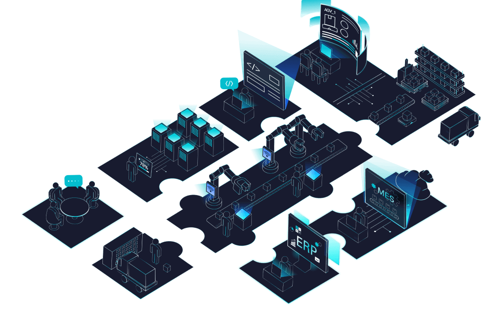

고객지원
인사이트리포트
Total. 28 [1/3]
-
구축사례
업종별 스마트팩토리 구축 전략 - 식음료
업종별 스마트팩토리 구축 전략 - 식음료 [네이버 블로그]
-
구축사례
업종별 스마트팩토리 구축 전략 - 석유·화학
업종별 스마트팩토리 구축 전략 - 석유·화학 [네이버 블로그]
-
제품소개
미라콤아이앤씨의 새로운 MES 솔루션 - Nexplant MESplus
스마트팩토리는 최적화된 생산만을 의미하는게 아니라 원료조달부터 생산, 유통, 고객서비스까지 특정산업의 밸류체인에 깊이 연관되어 연관되어연관되어연관되어연관되어연관되어연관되어
-
제품소개
공장의 Brain, 미라콤아이앤씨 스마트팩토리 플랫폼
제조기업들은 전통적으로 생산성 향상, 리드타임 단축, 품질관리 등의 고민을 항상 가지고 있습니다. 4차산업시대에도 제조업의 이러한 목표는 목표는목표는목표는목표는
-
구축사례
인터페이스 표준화를 위한 미들웨어 Highway101
스마트팩토리는 단순히 사람의 노동력을 대체하는 공장 자동화에서 한 반짝 더 나아가 센서와 기기들로부터 축적된 정보, 즉 빅데이터를 바탕 바탕바탕바탕바탕바탕바탕
-
구축사례
업종별 스마트팩토리 구축 전략 - 프로세스 산업
제조산업은 제조 물품의 종류만큼 다양한 생산방식을 보유하고 있습니다. 또한 모든 공장은 상이한 지리적 여건, 노동환경, 설비의 수준 등을 등을등을등을등을등을등을등을등을등을등을등을등을
-
검색 결과 혹은 게시물이 없습니다.